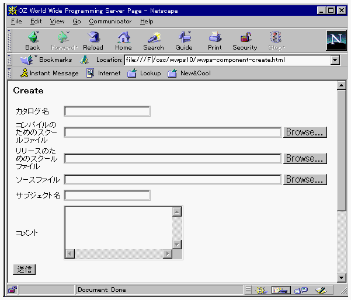

リモートカタログ生成
OZCGIサーバが起動しているマシンでカタログサーバに新しいカタログを登録することができます。

- 「HTML文書のカスタマイズ」での設定を行ったwwps-menu.htmlをWWWブラウザで開いて、Component
Createボタンをクリックしてください。

- 「カタログ名」にアクセスしたいカタログを指定します。(カタログサーバのGODを指定してください。)
- 「コンパイルのためのスクールファイル」にリリース用コンパイルを行なうためのスクールファイルを指定します。
- 「リリースのためのスクールファイル」にカタログに登録するクラスだけを含んだスクールファイルを指定します。
- 「ソースファイル」にリリースするクラスのソースファイルを指定します。
- 「サブジェクト名」にカタログの登録名を指定します。
- 「コメント」にカタログのコメントを入力します。
上記の6つのエリアの入力を行って送信ボタンをクリックすると、WWWサーバと接続され、WWWサーバ上のカタログサーバにカタログが登録されます。
登録が終了すると、WWWブラウザの画面がリモート実行のの標準出力を表示する画面に切り替わります。
(c) 1996-1998 IPA, ETL, AT21, FSIABC, FXIS,
InArc, MRI, NUL, SBC, Sharp, TEC, TIS. All rights reserved.